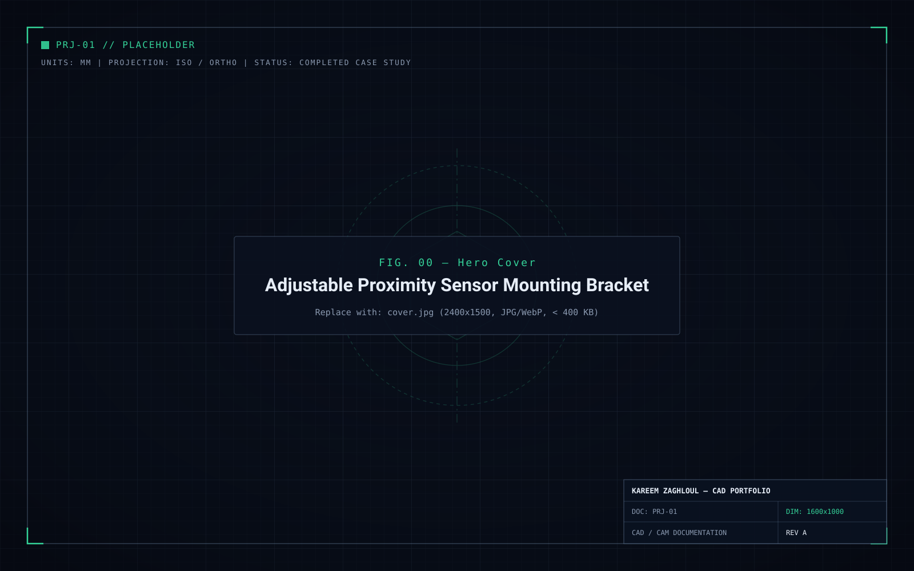

DRAWING 01
PDF
Base Plate Technical Drawing
2D manufacturing-style drawing for the machined aluminum base plate.
Download Drawing 01 (PDF)
Digital design project — physical manufacturing and testing have not been performed. The M12 sensor model is manufacturer reference CAD.
This project presents a complete SOLIDWORKS mechanical assembly designed to mount and position an industrial M12 proximity sensor with controlled linear adjustment.
The system pairs a machined aluminum base plate with an adjustable L-shaped sensor bracket and standard fastening hardware, providing a 25 mm linear adjustment range so sensor position can be set accurately relative to a target surface.
Alongside the 3D assembly and exploded view, the package includes manufacturing-style 2D technical drawings for both custom parts and digital interference checks performed inside SOLIDWORKS.
| Item | Component | Description |
|---|---|---|
| 01 | Aluminum Base Plate | Machined aluminum base providing a rigid mounting interface and attachment geometry for the bracket. |
| 02 | Adjustable L-Shaped Bracket | Custom L-bracket supporting the M12 sensor bore on the vertical flange and 25 mm linear slot adjustment along the base interface. |
| 03 | Industrial M12 Proximity Sensor | Manufacturer reference CAD model representing a standard cylindrical M12 industrial proximity sensor. |
| 04 | Standard Fastening Hardware | Standard mechanical fasteners used to clamp the adjustable bracket and secure the assembly cleanly. |
Assembly relationships were checked in SOLIDWORKS using standard mate definitions for component alignment and linear travel along the 25 mm adjustment slot.
Digital interference detection was performed in SOLIDWORKS across the assembly components, and an exploded view was created to verify assembly order and fastener access.
This case study covers 3D CAD modeling, digital interference checks, and manufacturing-style 2D drawings only. Physical machining, assembly, and sensor testing have not been performed.
Possible next steps if taken toward fabrication could include producing a physical prototype, performing a formal tolerance study across the mating hardware, and running functional fit and vibration checks with the target sensor.
2D manufacturing-style drawing for the machined aluminum base plate.
Download Drawing 01 (PDF)2D manufacturing-style drawing for the L-shaped sensor mounting bracket.
Download Drawing 02 (PDF)